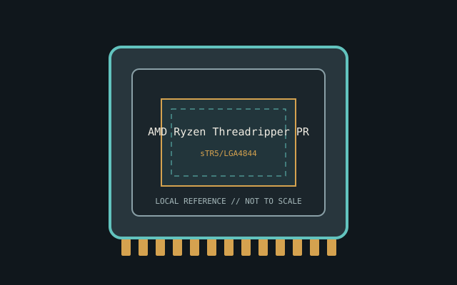

[ INDIVIDUAL CPU COMPONENT ]
AMD Ryzen Threadripper PRO 7995WX
Zen 4 workstation, 2023; 96C/192T, 2.5/5.1 GHz, 384 MB L3, 350 W Model-specific record; confirm the complete part marking before installation.

IDENTIFICATION: AMD Ryzen Threadripper PRO 7995WX. Product name alone does not establish package, stepping, voltage or firmware compatibility.
Verified model specifications
| Catalog path | Amd → Ryzen Threadripper |
|---|---|
| Model and compute | Zen 4 workstation, 2023; 96C/192T, 2.5/5.1 GHz, 384 MB L3, 350 W |
| Package / socket | sTR5/LGA4844 |
| Compatibility | WRX90 BIOS, ECC RDIMM, high-capacity cooling |
| Stepping and variants | Not non-PRO 7980X; verify OPN/8-channel population |
Compatibility and service
- WRX90 BIOS, ECC RDIMM, high-capacity cooling
- Not non-PRO 7980X; verify OPN/8-channel population
- Use socket tool/torque; record DIMM map/firmware
- Confirm board manual, exact CPU support list, firmware, voltage/power, memory and cooling before use; never force a package.
Service & archival notes
Use socket tool/torque; record DIMM map/firmware
Photograph package, markings, contacts and date/lot codes before repair. Log host board, BIOS/microcode, memory, cooler, condition, provenance and source revision.
Sources & further reading
- AMD processor specifications — AMD Ryzen Threadripper PRO 7995WXManufacturer catalog; search exact model and OPN.
- AMD support documentationManufacturer platform documents; verify motherboard BIOS separately.
Manufacturer documents take precedence. Family-level references may not resolve every stepping; verify the marking and motherboard CPU list.